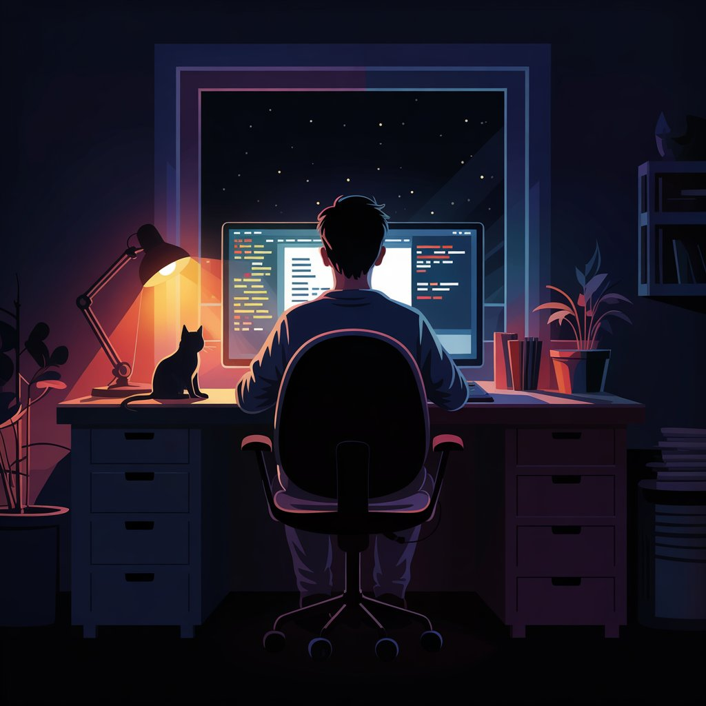

Nuestro Equipo
Las mentes creativas detrás de Open Show Cue

Eric Reck
Desarrollador Principal
Hola, soy Eric, desarrollador y creador principal de OSC (Open Show Cue). Aunque soy relativamente nuevo en el mundo de la programación, he trabajado en varios proyectos personales que me han ayudado a crecer y aprender mucho. OSC es, sin duda, mi proyecto más completo y ambicioso hasta la fecha: una herramienta de código abierto pensada para ofrecer control total sobre pistas de audio en un entorno moderno, intuitivo y visualmente cuidado. Estoy muy orgulloso del resultado, y emocionado por seguir mejorándolo con cada versión. ¡Gracias por pasar por aquí!
¿Quieres unirte al equipo?
Siempre estamos buscando personas apasionadas por el teatro y la tecnología.